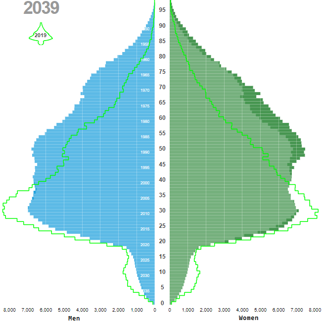
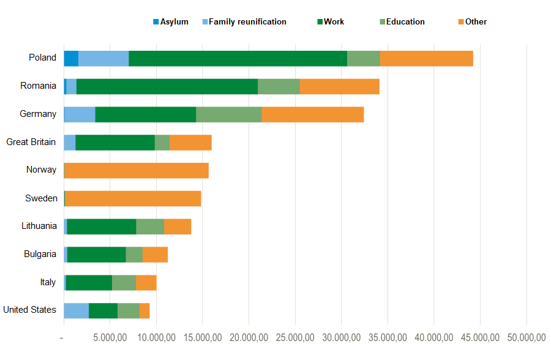
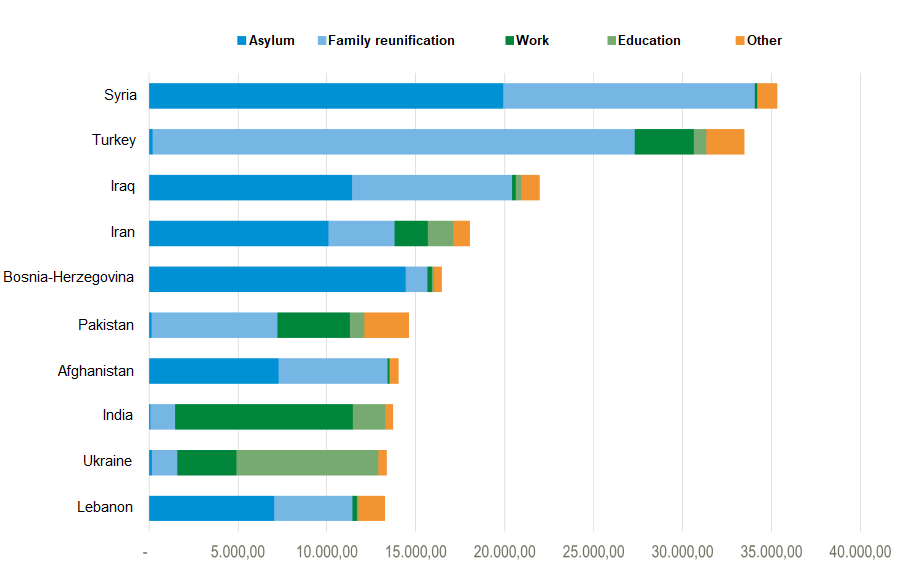
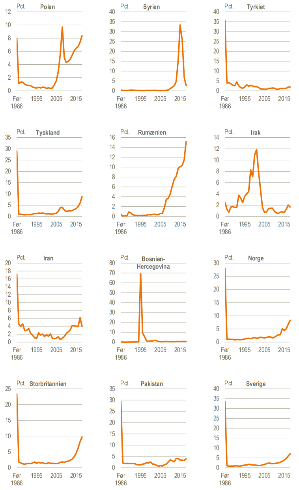

1 Introduction
[This paragraph should introduce the overall context, and very briefly introduce the aims/niche of the project: Why did I do this?]
This chapter describes type 2 diabetes (T2D) and how migrants are at particular risk. It also describes the context of care in Denmark and summarizes clinical guideline recommendations and how they relate to the needs of migrants with T2D. Finally, it introduces the reader to identification of diabetes patients in Danish healthcare registers as a means to provide much-needed knowledge on potential disparities in T2D care between migrants and native Danes.
1.1 Migrants and type 2 diabetes
T2D constitutes the vast majority of all diabetes cases, and disproportionally affects the socially deprived demographics in societies across the globe[manglerref]. The prevalence of type 2 diabetes (T2D) today exceeds half a billion people globally and is on the rise due to several factors, including population aging, urbanization, adoption of energy-dense diets, and sedentary lifestyles. These transitions are occurring at a rapid pace in developing countries, where they affect the largest number of people1. Many developing countries have populations with a genetic predisposition to developing T2D, which exacerbates the impact of these transitions.
Migrants are particularly vulnerable to T2D, as they are positioned at the point of convergence of these exposures: genetic predisposition, rapid lifestyle transitions, and the disparate social impact of T2D. After being granted residence permit in Denmark and other developed nations, migrants are often housed in densely-populated urban areas and exposed to drastic lifestyle transitions. Migrants may also suffer from previous mental and physical trauma, which - in addition to cultural and language barriers - can limit their ability to gain higher-income employment and escape their disadvantageous socioeconomic position.
In Denmark and many other developed nations, healthcare systems are facing a challenge to sustain the expected high quality of care in an aging population with a growing burden of chronic diseases and comorbidities. Prioritization of limited resources is crucial to ensure that those with the highest need for (and potential benefit from) healthcare receive adequate care. Migrant origin is a well-established risk factor of T2D, and migrants have a higher prevalence of T2D compared to native populations today[manglerref], but the increased risk of developing T2D is partially mitigated by their younger age. However, this only delays the impact of their increased T2D risk, and as these migrant populations age in the coming years, they will make up a growing proportion of T2D patients in the country - 9% of immigrants in Denmark were aged 66 years and above in 2019, a proportion projected to double by 20392. Therefore, understanding potential disparities in care and the specific healthcare needs of migrant populations with T2D can inform the prioritization of healthcare resources, ultimately ensuring that all individuals with T2D can continue to receive appropriate care.
Currently, there is a lack of evidence on T2D care in migrants, and research in this area faces several challenges that may explain the scarsity of evidence. Not only are migrants a minority, which limits the size of potential study populations, they are often a hard-to-reach group in studies that require patient engagement for inclusion, which exacerbates sample size problems and can induce selection bias in such study designs. Furthermore, migrants have historically been defined by their racial appearance and ethnic minorities categorized accordingly, particularly in Europe and the United States. While these categories allow researchers to identify racial minorities, they obscure the role of migrants in the modern era, and provide only indirect evidence on migrant minority groups3.
1.2 Migrants in Denmark
In 2019, Denmark had a population of approximately 5.8 million residents, of whom 600.000 (10%) were migrants and 1 million (18%) were aged 66 years and older. By 2039, the population is expected to have grown to 6.2 million, with a migrant population of 750.000 (12%) and 1.5 million individuals (23%) aged 66 years and older.2 Figure 1.1 shows the projected demographics of native Danes and migrants.


1.2.1 Migration
Individuals migrate between countries for various reasons, such as the pursuit of work, education and family reunification, or to seek protection. Due to different international rights, a clear legal distinction is made between ‘refugees’ and ‘migrants’. Refugees are defined by the United Nations High Commissioner for Refugees, and protected in accordance with international law:
Refugees are persons who are outside their country of origin for reasons of feared persecution, conflict, generalized violence, or other circumstances that have seriously disturbed public order and, as a result, require international protection.4
By contrast, there is no formal legal definition of an international migrant, although anyone changing country of usual residence, irrespective of the reason for migration or legal status, is generally considered a migrant.4
In Denmark, migrants seeking protection are processed by authorities to determine if they quality for refugee status, and whether they have previously applied for asylum elsewhere in the European Union per the Dublin Regulation.5 Individuals qualifying for refugee status are granted asylum and receive residence permits. Conversely, individuals with immediate family members holding Danish citizenship (or with residence permit granted for reasons other than refugee status) can apply for a residence permit on grounds of family reunification before entering the country,6 and residence permits can also be granted to citizens of the European Union, as well as individuals with work or study obligations in Denmark.7,8 Citizens of Finland, Iceland, Norway and Sweden are free to enter, reside and work in Denmark.9
Once residence has been granted, regardless of the reason, these individuals have access to the same public healthcare services as Danish citizens.
1.2.2 Migrants in the Danish data infrastructure
In the context of Danish registers and this PhD project, both refugees and immigrants are referred to as migrants after obtaining residence. In contrast to the automated collection of data on events occurring in Denmark, migrants and their past pose a challenge to register data collection.
Basic civil registration data on migrants is collected during processing of residence applications. Generally, registrations pertaining to events that occurred in another country prior to immigration require technical evidence (e.g. clinical imaging to determine age and verify date of birth) or legal proof from the issuing authority of the country where the event occurred. However, in cases where such documentation is unavailable, registrations may be supported by undocumented information provided by the migrant.10 In cases where information was not systematically collected at the time of migration, e.g. an individual’s level of education attained before migration, surveys have been used to collect this data retrospectively, or it may be imputed based on available data.11
1.2.3 Migrant groups in Denmark
In Danish civil register data, a migrant’s country of origin is defined by Statistics Denmark according to the following rules (paraphrased):
An immigrant is a person born abroad to non-Danish citizens. If Danish civil records contain data on a migrant’s mother, country of origin is defined by the mother’s country of birth. Otherwise the father’s country of birth is used, or - if no data is available - country of origin is defined by the country of birth of the immigrant themselves.12
Migrants from more than 200 different countries of origin reside in Denmark, making the migrant group very heterogenous with respect to geographic and cultural background.12 Furthermore, the context of migration differs greatly between migrants of different origins in terms of when and why a particular minority migrated to Denmark. For example, the vast majority of migrants from Turkey were granted residence due to work and family reunification in the 1960s and 1970s, while almost all migrants from Bosnia-Herzegovina were refugees from the Yugoslav wars of the 1990s. By contrast, migrants from other European countries came to Denmark mainly for work, education or other reasons at various points in time. Figure 1.2 shows the primary reason for migration among the largest migrant origin groups residing in Denmark, while Figure 1.3 shows the calendar year of immigration in different migrant groups.



The limited size of each ethnic minority and the strongly contrasting characteristics between them poses a challenge to statistical processing. Researchers must strike a balance between aggregation to achieve adequate sample sizes while preserving clinically meaningful minority groups, and avoid introducing biases due to aggregation of dissimilar groups.14 For statistical purposes, different geoschemes have been used by different institutions depending on the context and purpose. The Statistical Division of the United Nations developed the M49 Standard Country or Area Codes for Statistical Use,15 while Statistics Denmark group migrants into Western and Non-western countries, respectively, a grouping that resembles the more widely-used classification of developed and developing countries.16 See Chapter 3 for a description of grouping of countries of origin in the context of this PhD project.
1.2.4 Descendants
Descendants of migrants pose an additional challenge to classification for research purposes, as they can be considered part of the migrant group, the native population, or their own distinct demographic. In the context of T2D today, descendants of migrants in Denmark are a very young demographic unlikely to constitute a substantial proportion of the patient population (less than 1% of descendants are aged 66 years or older).2 There is also some evidence from Sweden suggesting that descendants are a distinct group from first-generation immigrants in terms of T2D and mortality.17 In the context of this PhD project, descendants were not a focus of investigation, and the term migrants specifically refers to first-generation migrants.
1.3 Type 2 diabetes care
1.3.1 Complications and risk factors
1.3.1.1 Overall
Complications of diabetes are traditionally divided into macrovascular (e.g. cardiovascular disease (CVD)) and microvascular complications (e.g. kidney disease, retinopathy, neuropathy), all of which contribute to morbidity and mortality in T2D. Several lifestyle and physiological factors influence the risk of developing complications, and clinical care revolves around management of these. In addition to being key risk factors of complications, blood pressure and levels of hemoglobin-A1C (HbA1c) and low-density lipoprotein cholesterol (LDL-C) drive indications for treatment and clinical decision-making in T2D[manglerref].
1.3.1.2 In migrants
In European countries, HbA1c-levels are higher in migrants than in native populations[manglerref], but LDL-C levels have only been sparsely described. The evidence on complication risk is inconsistent, but indicates a higher risk compared to native populations, although risks differ between complication types, migrant groups and countries. Similarly, higher mortality among migrants with T2D has been reported in some studies [refs], while other studies have found similar or lower risk [manglerrefs]
1.3.2 Pharmacological treatment
1.3.2.1 Overall
Due to their effects on HbA1c, LDL-C, and blood pressure, glucose-lowering drugs (GLD), lipid-lowering drugs (LLD), and antihypertensive drugs are critical parts of T2D care. In T2D patients with particularly high risk of complications, pharmacological treatment also includes antiplatelet therapy (APT), as the complication risk-lowering effect outweighs the risk of adverse events in these patients18,19. In addition to their effect on biomarker levels, certain drug types within the above classes of drugs have other positive effects. In particular, the GLD types sodium glucose co-transporter type 2 inhibitors (SGLT2i) and glucagon-like peptide-1 receptor agonists (GLP1RA) substantially reduce the risk of adverse cardiovascular and renal events beyond their effect on HbA1c. Similarly, the antihypertensive drugs types angiotensin-converting enzyme-inhibitors (ACEI) and angiotensin receptor blockers (ARB) reduce the risk and improve the prognosis of diabetic kidney disease (DKD) beyond their effect on blood pressure. [manglerref]
Combination therapy - the use of multiple drug types with differing mechanisms of action - is a way to increase treatment intensity and achieve treatment goals with fewer side-effects. Combination therapy is particularly important in T2D, as GLD monotherapy fails to achieve target levels of HbA1c in many patients, even at maximal dosage. [manglerref]
1.3.2.2 In migrants
Evidence from several European countries shows that GLDs are prescribed earlier and/or to a larger proportion of migrants compared to native populations[manglerref]. However, disparities in the quality of the prescribed GLD treatment, such as the use of combination therapy or the types of GLD prescribed, has not been studied. Indirect evidence suggests that such disparities are likely, as non-white minorities in the UK were slower and less likely to intensify to combination therapy than white groups[manglerref9], and migrants in Italy with T2D purchased fewer packages of non-insulin GLD per person-year than their native counterparts[manglerref10], and socioeconomic[manglerref21-25] and racial[manglerref22, 24, 27] disparities in prescribing of SGLT2i and GLP1RA have been reported in several countries.
In contrast, studies from European countries have reported lower rates of prescribing of LLD in migrants with T2D [care_qual_migrants refs 40, 5, Eastwood]. Treatment with LLD is not indicated in all patients with T2D, however, and only a few of these studies accounted for treatment indication.
Evidence on ACEI/ARB use and APT in migrants with T2D is very limited, but a study from Italy found lower odds of treatment in most migrant groups [42], indicating a potential for disparities in these areas of care.
1.3.3 Monitoring
1.3.3.1 Overall
In T2D, timely monitoring of risk factors and complications allows faster adjustment of treatment, and monitoring has previously been used as a process indicator of care quality, although the direct evidence on its influence on outcomes is sparse. [see refs [7-12, e.g. https://doi.org/10.1093/intqhc/mzl023, , evt. DVDD rapport]*
1.3.3.2 In migrants
The evidence on monitoring of T2D in migrants is inconsistent between countries and different aspects of monitoring. In Norway, migrants with T2D received similar or more monitoring than native Norwegians[manglerrefTran2010], while migrants with T2D in Italy received fewer referrals for consultations than native Italians[manglerrefMarchesini2014].
1.4 Clinical guidelines for type 2 diabetes care
In Denmark, T2D care is most often provided by general practitioners (GPs) and other actors in the primary care sector, although some patients are treated in the outpatient hospital setting. The Danish College of General Practitioners publishes national clinical guidelines for T2D in cooperation with the Danish Endocrine Society. The guidelines are continuously updated as new evidence emerges. In this PhD project, T2D care was studied in the time period covered by the 201220 and 201921 revisions (only minor changes were made between the two revisions). These guidelines advise that monitoring intervals, biomarker goals and treatment intensity are adapted to fit the individual patient, but specify recommendations that may be used as indicators of care quality.
Danish guidelines provide virtually no specific recommendations on T2D care in migrants, and migrants are not addressed in the appendix on pharmacological treatment of special groups. Guideline recommendations relevant to this PhD study are described below.
1.4.1 Diagnosis
HbA1c values \(\ge48 mmol/mol\) are diagnostic of type 2 diabetes, but diagnosis must be confirmed with a repeated sample on a different day. Once diagnosed, patients with T2D should be considered permanently affected by the disease, and the associated risk factors for complications should be treated regardless of subsequent normalization of HbA1c.
Migrant origin is mentioned as a risk factor of T2D, and guidelines recommend increased HbA1c screening in certain migrant groups.
1.4.2 Monitoring
The risk biomarkers HbA1c and LDL-C should be measured yearly, as well as urine albumin-to-creatinine ratio (UACR) to screen for DKD. Repeated samples of UACR \(\ge 300mg/g\) is considering diagnostic of diabetic kidney disease (DKD). Diabetic retinopathy should be screened by an ophthalmologist every second year and screening for diabetic foot disease by a podiatrist every year. At the initial diagnosis of T2D, a baseline-screening of all five types of monitoring is recommended.
Guidelines provide no specific recommendations on monitoring in migrants.
1.4.3 Biomarker levels
For HbA1c, the goal should be the lowest possible level without hypoglycemia or inappropriate polypharmacy. Specific targets at \(48 mmol/mol\), \(53 mmol/mol\), \(58 mmol/mol\), and \(70 mmol/mol\) are provided depending on diabetes duration and severity, complications, age and comorbidities.
For LDL-C, the level should be as low as possible. A general target below \(2.6mmol/L\) is provided, while the target in patients with complications should be below \(1.8mmol/L\).
Guidelines provide no specific recommendations on HbA1c or LDL-C targets in migrants.
1.4.4 Pharmacological treatment
1.4.4.1 Glucose-lowering drugs
Combination therapy: GLD therapy is recommended in patients with HbA1c ≥ 48 mmol/mol, and metformin is the recommended first-line treatment. There is no overall recommendation of second- or third-line drugs, although SGLT2i or GLP1RA should be considered in patients with CVD when metformin or other treatment is insufficient to reach the patient’s HbA1c target (note that, although not in effect during the time period studied in this PhD project, the recommendations for SGLT2i and GLP1RA were expanded in the 2022 revision to include all T2D patients with CVD, multiple risk factors for CVD, or chronic kidney disease, irrespective of HbA1c level).
Individual drug types: Guidelines recommend factoring in all effects - positive and negative - as well as cost when choosing between individual drug types, and do not present a fixed hierarchy between GLD drug type. [maybe summarise guideline considerations on second- and third-line drugs, similar to https://vejledninger.dsam.dk/media/238.png]
1.4.4.2 Lipid-lowering drugs
Treatment with LLD is recommended to all individuals with prevalent CVD, diabetic nephropathy, or LDL-C above 2.5 mmol/L.
1.4.4.3 Antihypertensive drugs
In addition to treatment of hypertension, use of either ACEI or ARB is recommended in individuals with prevalent CVD, microalbuminuria, or diabetic kidney disease.
1.4.4.4 Antiplatelet therapy
APT is recommended in individuals with prevalent CVD, diabetic kidney disease or very high risk of CVD due to other risk factors (this recommendation was expanded in the 2022 revision to also include individuals with kidney failure and concurrent microalbuminuria).
Guidelines provide no specific recommendations on any aspect of pharmacological treatment in migrants.
1.5 Identification of type 2 diabetes cases in healthcare registers
1.5.1 Danish register data infrastructure
What is collected on whom, and how? Details in chapter 3.
How is the data structured and stored, who can get access - to what, and how?
Researchers get access to the same raw data, stored in the same structure (unless a data manager on the recipient end edits the raw data during the access data transfer process)
The shared data potentially enables reproducible research, if code were also shared publicly (which it is not).
1.5.2 Benefits
Healthcare registers provide a powerful data source for population-wide studies without the need to engage the patient for inclusion. The ability to include all individuals in the population makes them particularly suited for studies of migrants with T2D, where sample size is a limiting factor and other data sources may be vulnerable to selection bias in these groups.
1.5.3 Challenges
General-purpose registers and other administrative databases often provide the basis of diabetes epidemiology, but rarely contain validated diabetes-specific data. If the diabetes-specific data is not accurate, bias may be induced into studies. Thus, it is important to have an accurate tool to identify individuals with diabetes in the registers, as findings may differ with various diabetes definitions. Considerable efforts have been made towards establishing such a tool for diabetes research in several countries, including Denmark.
Internationally, some algorithms classifying T1D and T2D have been validated in cohorts of individuals with diabetes, but none have been validated in a general population. In a general population, classification algorithms (classifiers) must not only discern type 1 diabetes (T1D) from T2D, but also identify diabetes while accounting for events that might lead to inclusion of non-cases, such as use of GLD in the treatment of other conditions. Currently, no type-specific diabetes classifier has been validated in a general population, which leaves register-based studies in this area vulnerable to biases.
1.5.4 Register-based diabetes classifiers
In Denmark, the first resource readily available to researchers to identify diabetes cases using register data was the National Diabetes Register, established in 2006. The National Diabetes Register was discontinued in 2012, and a later validation study questioned its validity and called for future registers to adopt inclusion based on elevated HbA1c levels.
Launched in 2014, the Register of Selected Chronic Diseases (RSCD) is currently the only publicly available resource to identify diabetes cases in Danish register data (by application to the Danish Health Data Authority), but it has not been publicly validated nor is the source code behind the algorithm publicly available. Notably, the algorithm lacks inclusion based on elevated HbA1c levels.
Since the launch of RSCD, nationwide laboratory data on HbA1c testing has become available in the Danish register ecosystem,22 but have yet to be incorporated into available diabetes classifiers.
1.6 Introduction at a glance
T2D is a disease that carries serious risks, but several treatment options are available to control the risk factors in T2D and reduce the risk of complications and death. In an aging population, the burden of T2D on healthcare services is rising, and resources must be prioritized to those with higher needs to ensure adequate care.
Migrants are particularly vulnerable to T2D, having an increased prevalence of the disease compared to native Danes. Despite having higher HbA1c levels than their native counterparts, evidence on complication risk and mortality in migrants is inconsistent, but some evidence suggests a higher risk. Evidence on disparities in care that may contribute excess risk in migrants with T2D is limited, and research in this area faces several challenges that may explain this, such as limited sample sizes and migrants being hard-to-reach for intervention and survey studies. Register-based studies are well-suited to handle these limitations, but currently there is no validated method to identify T2D cases in a general population, which leaves register-based studies in this area vulnerable to biases.
In Denmark, guidelines are available to direct clinicians and patients towards the best possible outcomes while prioritizing resources. Despite the special challenges facing migrants, current guidelines do not contain specific recommendations for T2D care in migrants, perhaps due to the limited evidence on specific areas of T2D care where disparities between migrant groups and native Danes may be present.